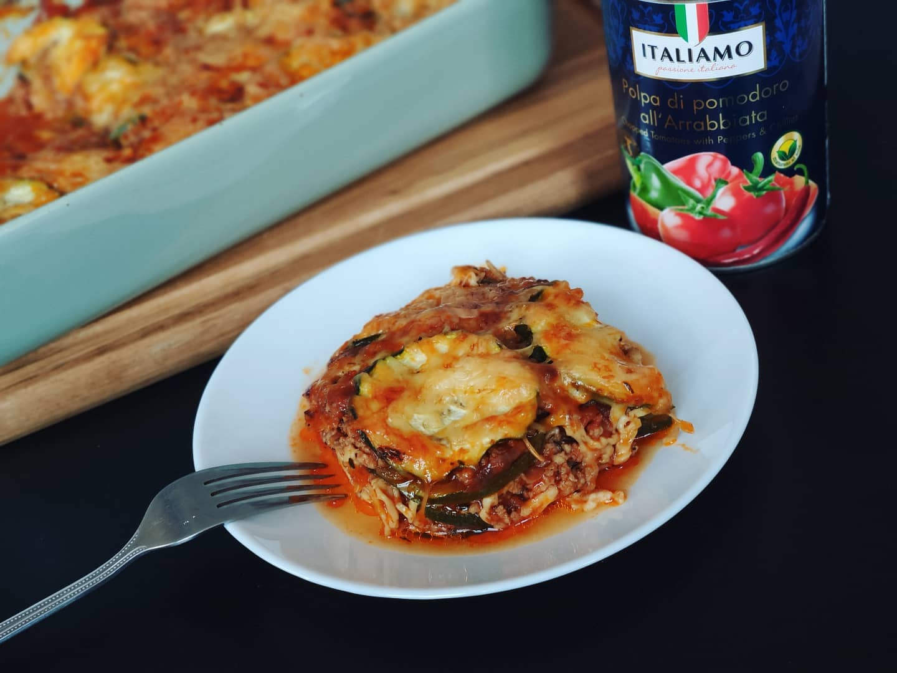

Mleté mäso podľa @lclifestyle_lucca — Normy Jedál
Zapečená cuketa s mletým masem
Co potřebujeme:
500 g mletého masa mix
Plechovka loupaných rajčat v omáčce
1 lžíce rajčatového protlaku
250g strouhaného sýra
1 červená cibule
1 lžíce ghí
3 stroužky česneku
Provensálské bylinky
Sůl, pepř
1 větší cuketa
Nakrájenou cibuli osmahneme na ghí, přidáme maso a necháme zatáhnout. Okořenime, přidáme rajčata, protlak a česnek, podlijeme trochou vody a necháme dusit dokud se omáčka nezredukuje.
Mezitím si nakrájíme cuketu na tenčí plátky.
Do pekáče dáváme střídavě cuketu, směs a sýr.
Pečeme na 180° dozlatova. Cca 45 minut.
#lowcarbdiet #jsemlowcarb #milujulowcarb #lowcarblife #lowcarbstyle #lowcarbczech #lowcarbrecipes #lowcarbrecepty #nizkosacharidoverecepty #zdravastrava #zjednohopekace #cuketa #mletemaso #vecere #obed #zdravevareni #healthylifestyle